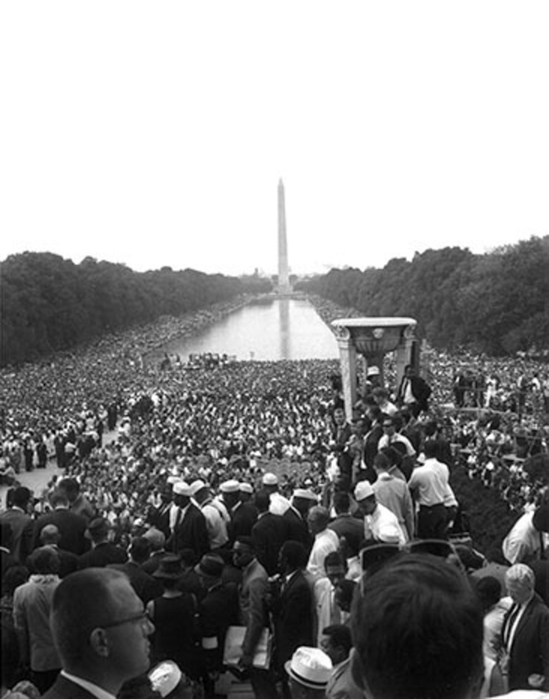

Intro
The Civil Rights Act of 1964 was a piece of landmark legislation marked a new frontier in civil rights in the United States and helped to advance equality and justice for all. We will explore the impact of the Civil Rights Act of 1964 on African Americans, and how it addressed discrimination in voter registration, employment opportunities, and public spaces.
(Franklin)
What was happening at this time?
- The Civil Rights Act of 1964 was passed in the context of the Civil Rights Movement.
- The Civil Rights Movement aimed to end racial segregation and discrimination against African Americans.
- Activists and leaders, including Martin Luther King Jr., Rosa Parks, and James Meredith, worked to bring about change.
- The movement challenged the status quo during the 1950s and 1960s.
Thesis
In 1964, the Civil Rights Act was signed into law by Linden Johnson, making discrimination based on race illigal. This was a frontier for African American populations because it barred unequal application of voter registration requirements, created more opportunities for employment, and prohibited discrimination in public spaces.
About the Civil Rights Act
The Civil Rights Act of 1964 aimed to end discrimination and segregation based on race, color, religion, sex, or national origin in the United States
The Act had several titles that addressed different aspects of civil rights, such as voting rights, public accommodations, education, employment, and federal programs
After a long debate in Congress, the act was signed into law by President Lyndon B. Johnson on July 2, 1964
The Act is widely regarded as one of the most significant achievements of the civil rights movement and a milestone in American history